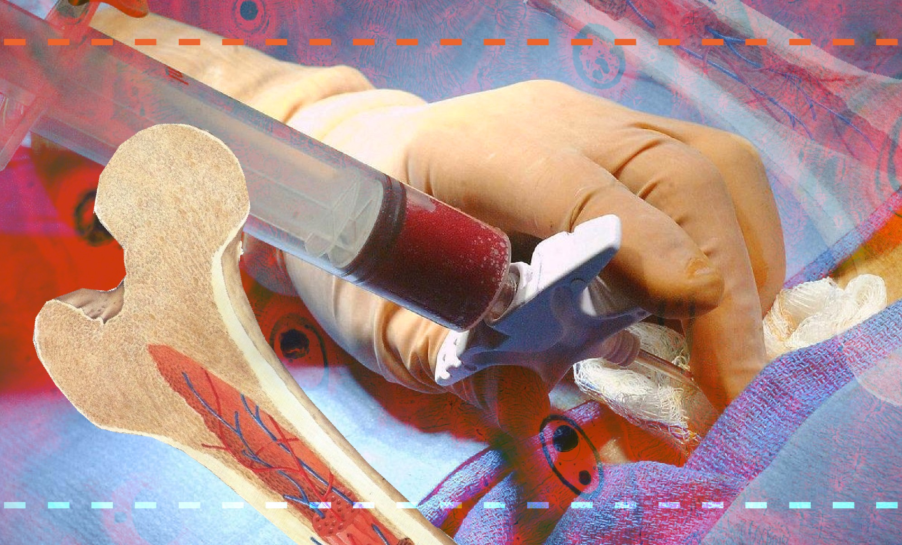

Kanserli bir büyüme veya verem gibi bir enfeksiyon sonucu normal
kemik iliği yerini kaybedebilir ve bunun sonucunda alyuvar,akyuvar ve kan
pulcuklarının üretiminde bir azalma olabilir. Ayrıca, kemik iliğinde kan
hücrelerini oluşturucularının (progenitor) kanserlerine de rastlanır, bunlar
lösemilerdir.